Funktionen im Detail
Was zendiloOS kann, Bereich für Bereich.
Jeder Bereich in wenigen Sätzen, mit den Einzelheiten, dem, was noch Vorschau ist, und dem Weg zur ausführlichen Dokumentation.
Vorschau kann sich noch ändern · Getestet wird alles in virtuellen Maschinen; auf echter Hardware lief es bisher nur auf einem kleinen x86-64-Board.
Speicher und Platten
Ihre Daten auf ZFS, mit Leitplanken.
zendiloOS legt Ihre Daten auf OpenZFS ab. ZFS prüft jeden Block, den es liest, und repariert ihn aus einer zweiten Kopie, wo die Anordnung eine hat. Ein Pool besteht aus einer oder mehreren Platten in einer Anordnung, und zendiloOS sagt Ihnen vor der Wahl, was jede davon übersteht.
Platten kennt zendiloOS an ihrer Seriennummer, nie an Namen wie sdb, die sich ändern können. Bevor ein Pool entsteht oder gelöscht wird, zeigt ein Plan jede Platte, die gelöscht wird, und Sie tippen den Namen des Pools noch einmal ein; der Agent prüft erneut, bevor er eine Platte anrührt.
- Anordnungen
- Einzelne Platte, Spiegel (ab 2 Platten), RAIDZ1 (ab 3), RAIDZ2 (ab 4), RAIDZ3 (ab 5)
- Voreinstellungen
- Kompression mit lz4, keine Zugriffszeiten, 4K-Sektoren; jeder Pool als Volume eingehängt
- Prüfungen
- SMART alle sechs Stunden, kurze und lange Selbsttests nach Zeitplan, ein Scrub jeden Monat und wann immer Sie einen starten
- Wo jede Platte sitzt
- Schächte aus einem Katalog von NAS-Modellen oder nach eigenem Aufbau, eine Platte, die zum Finden blinkt, Kaufdatum und Garantie jeder Platte
- Neuer Pool
- Ein Assistent in drei Schritten: Platten und Anordnung nebeneinander, mit geschätztem nutzbarem Platz, Tempo und Schutz, dann ein Name und der Plan zur Bestätigung
- Pools einer früheren Installation
- Gefunden und importiert, wenn Sie es wollen, nie von selbst: Ein Pool, den ein anderer Rechner noch nutzt, nähme Schaden
- Getestet
- In virtuellen Maschinen: ein Spiegel angelegt, eine Platte gezogen und ersetzt, Resilver, Scrub, Löschen verweigert, solange Freigaben, Docker oder VMs auf dem Pool liegen. Die Schachtreihenfolge der eingebauten NAS-Modelle ist auf den echten Geräten noch nicht bestätigt.
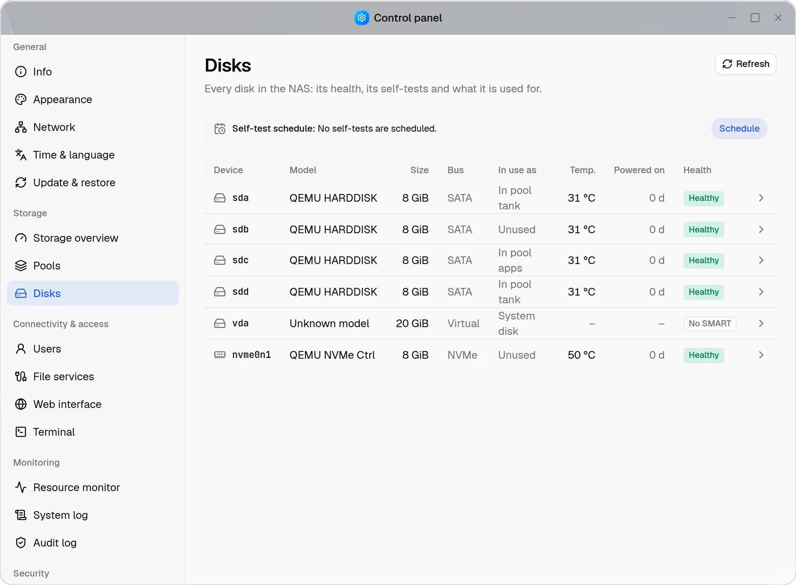
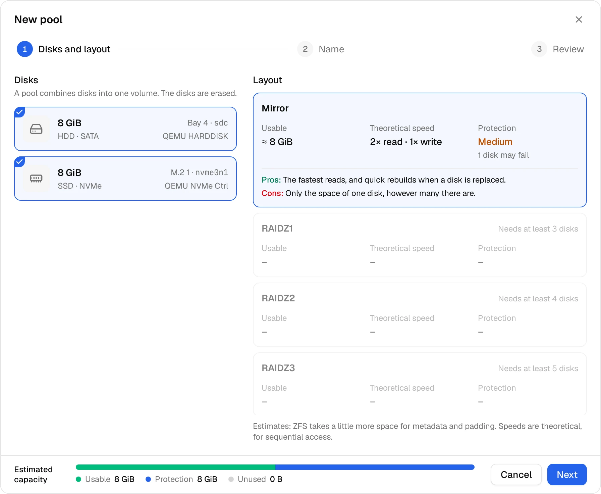
Freigaben und Dateien
Ein freigegebener Ordner für jedes Gerät im Haus.
Eine Freigabe ist ein Ordner auf einem Volume mit einem eigenen ZFS-Dataset. Sie legen für jede Person und Gruppe fest, wer lesen oder schreiben darf, und Samba, NFS und der Datei-Explorer halten sich alle an dieselbe Regel. Windows findet das NAS über WS-Discovery, macOS über Bonjour.
Snapshots halten frühere Stände einer Freigabe fest, von Hand oder nach Zeitplan, und Windows bietet sie als vorherige Versionen an. Der Explorer im Browser erreicht persönliche Ordner, Freigaben und USB-Laufwerke in einem Fenster.
- Protokolle
- SMB ab Version 2.0, nie SMB1; NFS. Jedes als Ganzes ein- oder ausgeschaltet
- Zugriff
- Lesen und Schreiben oder nur Lesen, für jede Person und Gruppe; NFS für jeden Rechner oder jedes Netz
- Je Freigabe
- Ein Kontingent, die Kompression (lz4, zstd oder aus) und die Blockgröße
- Snapshots
- Stündlich, täglich, wöchentlich und monatlich, jeweils 1 bis 100 behalten; Dateien daraus zurückkopiert; eine Freigabe zurückgesetzt, nachdem Sie ihren Namen eingetippt haben
- Papierkorb
- Einer für alle Ordner im Explorer; Löschen über SMB oder NFS ist endgültig, die Snapshots behalten, was da war
- Explorer
- Ein Baum der Ordner, Ziehen und Ablegen, Hochladen, Ordner als Archiv herunterladen, eine Suche durch alle Unterordner
- USB-Laufwerke
- FAT, exFAT, NTFS und ext4: eingehängt, zum Kopieren in beide Richtungen, ausgeworfen
- Liste und Raster
- Große Symbole im Raster, eine Leiste mit den Aktionen, die Seitenleiste in Abschnitten
- Getestet
- Mit echten SMB- und NFS-Clients in einer virtuellen Maschine. Ein Windows- oder macOS-Rechner hat noch keine Freigabe benutzt.
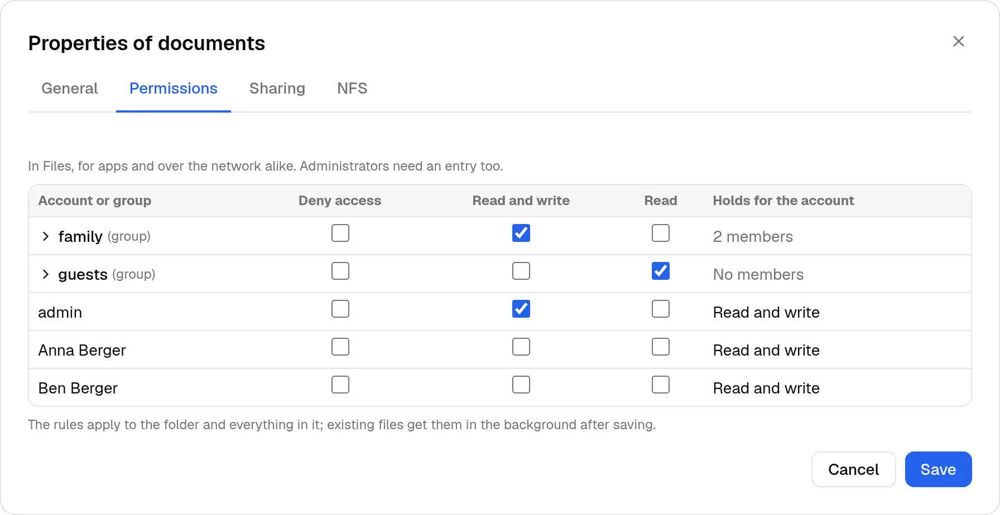
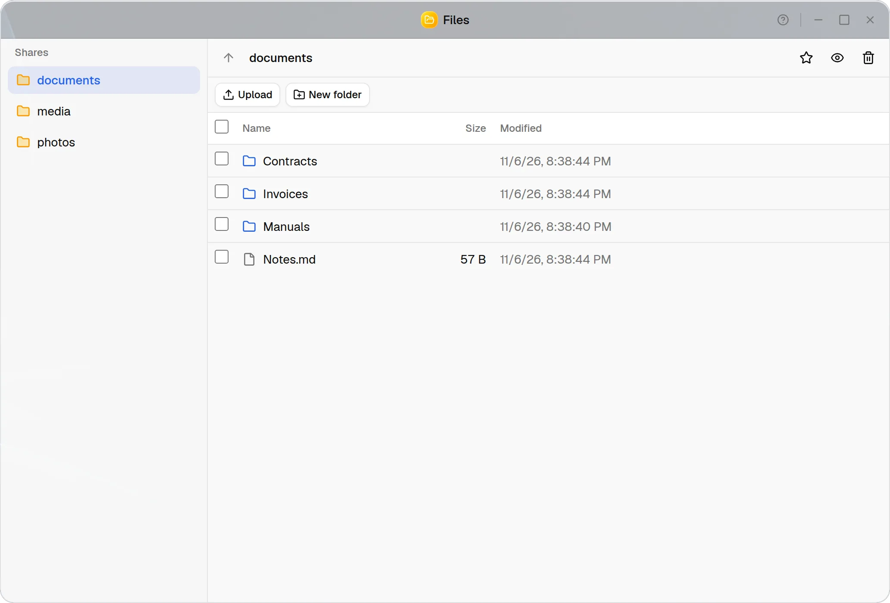
Apps und Docker
Apps per Klick, und Sie können sie ändern.
Das App Center installiert Apps aus dem Community-Katalog oder aus Katalogen, die Sie hinzufügen. Sie wählen Ordner, Ports und Einstellungen einer App und sehen ihre compose.yaml, bevor sie startet; danach ist sie ein gewöhnliches Docker-Compose-Projekt von Ihnen, das Sie in der Docker-App ändern, aktualisieren und entfernen.
Was über einen Container hinausgeht, etwa ein Gerät, das Netz des Rechners oder der Docker-Socket, wird genannt und braucht Ihre Zustimmung. Docker selbst ist ein Plugin des App Centers aus Debians eigenen Paketen, installiert, wenn Sie es brauchen.
- Kataloge
- Der Community-Katalog fest eingebaut; weitere aus einem GitHub-Repository oder über eine Adresse
- Zustimmung
- Geräte, das Netz des Rechners, der Docker-Socket und Ordner des Rechners werden genannt, bevor ein Projekt startet
- Docker-App
- Container, Images, Netzwerke und Compose-Projekte; eine Seite für jeden Container mit Live-Log und Terminal
- Image-Updates
- Container mit neuerem Image markiert, aus der Liste oder nach Zeitplan aktualisiert
- Volumes
- Mit den Containern aufgelistet, die sie nutzen, täglich, wöchentlich oder monatlich in eine Freigabe gesichert, unter ihrem Namen oder in ein anderes Volume wiederhergestellt
- Plugins
- Docker, Zertifikate von Let’s Encrypt; virtuelle Maschinen und Backup
- Architekturen
- Jede App sagt, für welche Architekturen ihre Images gebaut sind; eine ohne passendes Image für Ihren Rechner lässt sich nicht installieren
- Getestet
- In virtuellen Maschinen: Docker als Plugin installiert, Projekte mit Zustimmung, das Terminal, Image-Updates, Volumes gesichert und wiederhergestellt, eine App aus dem Katalog als eigenes Projekt.
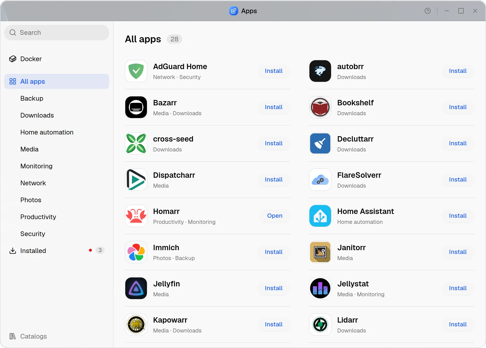
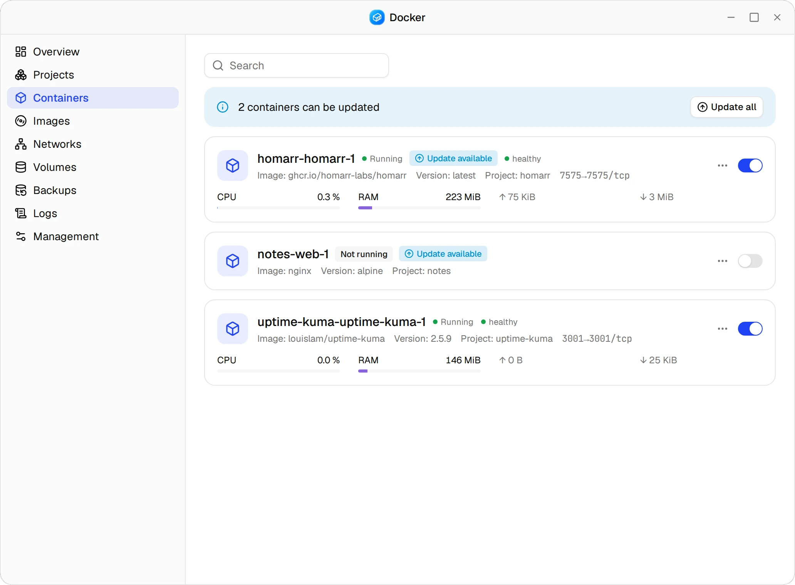
Virtuelle MaschinenVorschau
Virtuelle Maschinen neben Ihren Daten.
Das Plugin Virtuelle Maschinen im App Center bringt libvirt und QEMU aus Debian mit und dazu eine App, in der Administratoren VMs anlegen, ändern, starten und stoppen. Eine VM kann mehrere Platten und Netzwerkkarten haben, ihre ISOs kommen aus einer Image-Bibliothek, und ihre Konsole öffnet sich im Browser.
Snapshots erfassen alle Platten einer VM auf einmal, von Hand oder nach Zeitplan. Backups gehen in eine Freigabe oder auf ein USB-Laufwerk und werden als neue VM oder über die alte wiederhergestellt. Für Windows 11 bekommt eine VM ein TPM und Secure Boot.
Virtuelle Maschinen sind eine Vorschau und gibt es nur auf x86-64. Das Plugin prüft zuerst, ob der Prozessor sie ausführen kann (Intel VT-x oder AMD-V).
- Hardware
- Bis zu 8 Platten (virtio oder SATA), bis zu 4 Netzwerkkarten (virtio oder e1000e), bis zu 3 Laufwerke für ISOs; UEFI oder BIOS
- Vorlagen
- Linux, Windows (mit TPM und Secure Boot) und Sonstige
- Netzwerke
- Über das NAS, an einer Bridge, direkt an einer Netzwerkkarte (macvtap) oder in einem internen Netz, von dem sich das NAS selbst fernhält
- Speicher
- Platten als ZFS-Volumes auf einem oder mehreren Pools; jeder Pool zeigt seinen Zustand, seinen Platz und die VMs darauf
- Images
- ISOs aus einer Freigabe kopiert oder aus dem Browser hochgeladen
- Konsole und Last
- Die Konsole im Browser (noVNC); Prozessor und Speicher jeder VM live
- Snapshots
- Alle Platten auf einmal, die Dateisysteme des Gasts eingefroren, wenn sein QEMU Guest Agent antwortet; stündlich, täglich, wöchentlich oder monatlich; zurückgesetzt, während die VM aus ist
- Backups
- Jede Platte mit zstd komprimiert und beim Wiederherstellen an ihrer Prüfsumme geprüft
- Geräte des Rechners
- USB-Geräte, auch während die VM läuft; PCI-Geräte mit IOMMU und ausgeschalteter VM. Geräte, die der Rechner selbst braucht, etwa der Controller seiner Platten, werden verweigert
- Getestet
- In verschachtelten virtuellen Maschinen: VMs mit mehreren Platten und Karten, die Image-Bibliothek, die Konsole, Snapshots per Prüfsumme verglichen, Backups wiederhergestellt, TPM und Secure Boot. Noch nicht: durchgereichte Geräte auf echter Hardware und eine Installation von Windows 11.
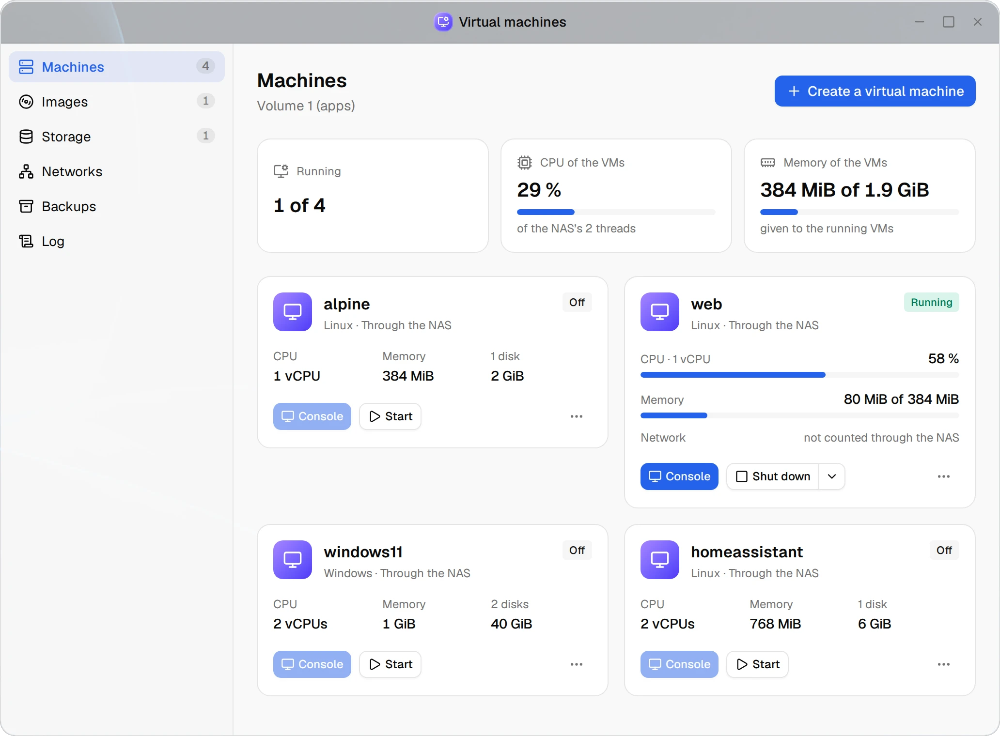
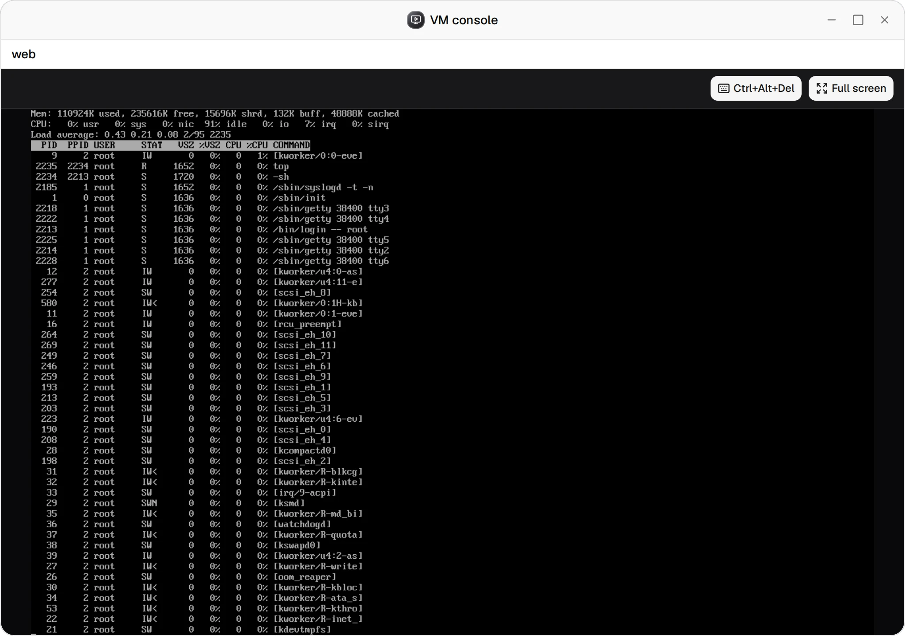
Backups
Eine zweite Kopie, an einem anderen Ort.
ZFS schützt Ihre Daten vor einer ausfallenden Platte, nicht vor einem gelöschten Ordner, einem Brand oder einem Diebstahl. Das Backup-Plugin bringt rsync und rclone aus Debian mit und dazu eine App, in der Administratoren Sicherungsaufgaben einrichten: von einer Freigabe auf einen anderen Pool, ein USB-Laufwerk, einen Server oder in eine Cloud, nach Zeitplan oder immer dann, wenn das Laufwerk eingesteckt wird.
Jeder Lauf ist ein Auftrag mit Protokoll und Dateiliste, und ein fehlgeschlagener oder unvollständiger Lauf wird gemeldet. Eine Wiederherstellung holt eine Version ganz oder teilweise zurück, an ihren alten Ort oder in einen anderen Ordner.
- Ziele
- Eine andere Freigabe oder ein anderer Pool, ein USB-Laufwerk, ein rsync-Server über seinen Daemon oder über SSH mit festgehaltenem Host-Schlüssel, Google Drive, OneDrive
- Von einem Server
- Ein Ordner eines Servers ins NAS gesichert
- Spiegel oder Versionen
- Ein Spiegel, der auf Wunsch einige Tage behält, was ein Lauf löscht oder ersetzt; oder datierte Versionen, unveränderte Dateien als Hardlink auf die vorige, behalten nach Anzahl und Alter
- Verschlüsselung
- Namen und Inhalte mit rclones crypt verschlüsselt, in eine Freigabe, auf ein Laufwerk, in eine Cloud oder auf einen SSH-Server
- Zeitpläne
- Stündlich, täglich oder wöchentlich in der Zeitzone des NAS, oder wenn das Laufwerk eingesteckt wird
- Abschottung
- Jeder Lauf in einer eigenen Unit, die nur ihre Ordner sieht und nur ins Ziel schreibt; Passwörter und Schlüssel nie auf einer Befehlszeile; Google Drive gibt nur die Dateien frei, die das NAS schreibt
- Ebenfalls gesichert
- Docker-Volumes in eine Freigabe; virtuelle Maschinen in eine Freigabe oder auf ein USB-Laufwerk; die Konfiguration, siehe Updates und Wiederherstellung
- Getestet
- In virtuellen Maschinen: Spiegel und Versionen zwischen Pools, ein USB-Laufwerk, ein rsync-Daemon und SSH, Wiederherstellungen, ein verschlüsseltes Backup. Google Drive und OneDrive nur gegen Attrappen: Ein Backup in ein echtes Konto gab es noch nicht.
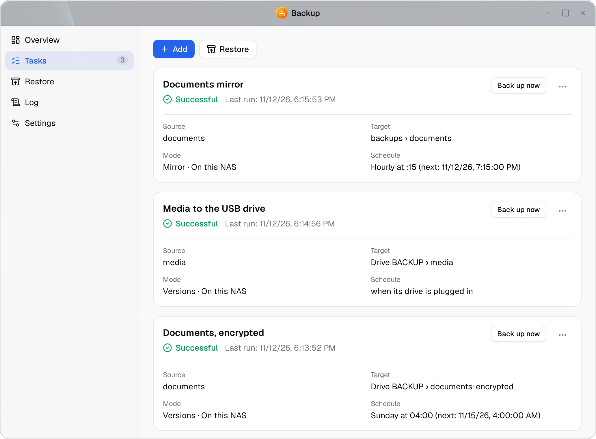
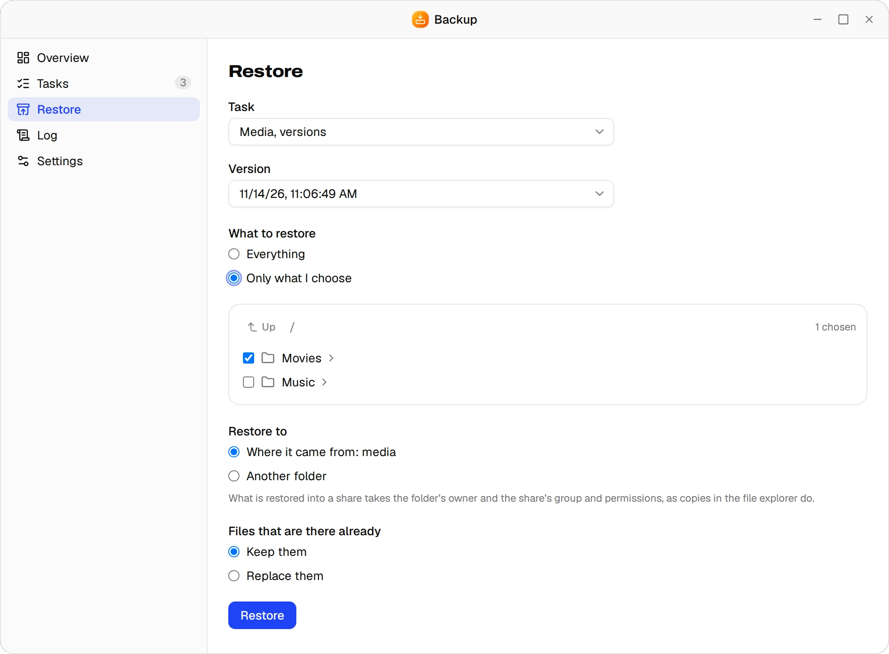
Netzwerk
Netzwerkänderungen, die auf Ihre Bestätigung warten.
Jede Netzwerkkarte bekommt ihre Adressen per DHCP oder fest, IPv6 aus Router-Ankündigungen und bis zu drei Nameserver. zendiloOS verwaltet das Netzwerk über systemd-networkd, jetzt auch auf Installationen vom ISO, und übernimmt ein Debian, das mit ifupdown eingerichtet ist, wenn Sie es wünschen.
Eine Änderung bleibt erst, wenn Sie sie innerhalb von zwei Minuten bestätigen, von der neuen Adresse aus, falls sie sich geändert hat; sonst geht alles von selbst zurück. Änderungen an zendiloOS vorbei, etwa an der Konsole, fallen auf, und Sie entscheiden, ob zendiloOS seine Einstellungen wiederherstellt oder die Dateien übernimmt.
- Je Karte
- IPv4 per DHCP, fest oder aus; IPv6 aus Router-Ankündigungen oder aus; bis zu drei Nameserver
- Bestätigung
- Zwei Minuten zum Bestätigen im Browser, sonst geht die Änderung zurück; vor dem Abschalten einer Karte kommt eine Rückfrage
- Bridges
- Kabelgebundene Karten, Bonds und VLANs als Mitglieder, oder keine, nur für VMs; STP aus, wenn nicht gewünscht
- Bonds
- Active-Backup, 802.3ad (LACP) oder balance-alb
- VLANs
- IDs 1 bis 4094, auf einer Karte, einem Bond oder einer Bridge
- ISO und ifupdown
- Installationen vom ISO ab dem ersten Start verwaltet; ein Debian mit ifupdown auf Wunsch übernommen, und was sich nicht übernehmen lässt, mit Datei, Zeile und Grund genannt und so belassen
- Änderungen von außen
- Eine Benachrichtigung und ein Hinweis auf der Netzwerkseite, dann wiederherstellen oder die Dateien übernehmen
- Name des Rechners
- In der Oberfläche geändert, bis zu 15 Zeichen; SMB, mDNS (name.local) und WS-Discovery ziehen mit, und das eigene Zertifikat wird neu erstellt
- Getestet
- In virtuellen Maschinen: Adressen geändert, eine Änderung, die den Rechner abschneidet, geht zurück, die Übernahme von ifupdown mit und ohne Bestätigung, Bridges, Bonds und VLANs.
Sicherheit
Nichts ändert sich ohne Prüfung.
Die Weboberfläche und ihre API laufen ohne Rechte. Was das System verändert, geht durch zendiloos-agent, einen kleinen, abgeschotteten Dienst, der jede Anfrage gegen strenge Regeln prüft und die Werkzeuge mit festen Argumenten aufruft.
Die Anmeldung kann einen Code aus einer Authenticator-App verlangen, Fehlversuche sperren die Adresse für eine Weile, und jede Sitzung lässt sich beenden. Die Firewall bestimmt, wer welchen Dienst erreicht, die von Docker veröffentlichten Ports eingeschlossen, und eine Änderung an ihr geht zurück, wenn Sie sie nicht bestätigen.
- Anmeldung
- Zwei Faktoren mit einer Authenticator-App, Wiederherstellungscodes, eine Passwortrichtlinie, Grenzen für Fehlanmeldungen und gesperrte Adressen
- Rollen
- Administrator, Benutzer und Nur-Lesen; der Server prüft jede Anfrage, egal was die Oberfläche zeigt
- Firewall
- nftables, Regeln nach Dienst, Adresse oder Netz, die von Docker veröffentlichten Ports eingeschlossen; eine Änderung geht nach 90 Sekunden ohne Bestätigung zurück
- HTTPS
- TLS 1.2 oder neuer; das eigene Zertifikat des Rechners oder eines von Let’s Encrypt über HTTP-01 oder DNS-01
- DNS-Anbieter
- 81 für DNS-01, von DynDNS-Diensten wie IPv64 bis zu Hostern und großen Clouds, jeder gegen Debians acme.sh geprüft
- SSH
- Für eine Aufgabe eingeschaltet, mit Port und der Wahl, wer sich anmelden darf; nach spätestens einem Tag schaltet es sich selbst wieder ab
- Protokoll
- Jede Änderung eines Administrators festgehalten; durchsuchbar und als CSV exportiert
- Releases
- Mit minisign signiert und vor der Installation geprüft
- Stückliste der Software
- CycloneDX für jedes Paket eines Releases, und die Lizenzen von allem, was es enthält
- Getestet
- In virtuellen Maschinen: TLS, Fehlanmeldungen und gesperrte Adressen, Sitzungen, Zwei-Faktor-Anmeldung, die Firewall mit den Ports von Docker, SSH, das sich selbst abschaltet, Zertifikate über ACME.
Updates und Wiederherstellung
Updates ohne Überraschungen, und ein Weg zurück.
Einmal am Tag sucht zendiloOS nach Paket-Updates von Debian und nach neuen Releases von zendiloOS in Ihrem Kanal. Sie entscheiden, wann installiert wird, ein Release wird nur mit gültiger Signatur installiert, und das NAS startet nur neu, wenn Sie es sagen.
ZFS wird für jeden Kernel gebaut. Ein Kernel, für den das ZFS-Modul nicht gebaut werden konnte, startet nie: GRUB startet weiter den neuesten Kernel, der es hat, und die Seite Updates sagt, welcher als Nächstes startet und warum.
Eine Konfigurationssicherung hält Konten, Freigaben, Einstellungen und Zertifikate in einer Datei fest, mit einer Passphrase verschlüsselt. Auf einer frischen Installation statt der Ersteinrichtung wiederhergestellt, bringt sie den Rechner zurück: Die Pools der alten Installation werden importiert, wenn Sie es wollen, und ihre Netzwerk- und Firewall-Einstellungen nacheinander übernommen, jede bestätigt.
- Kanäle
- Stabil für Releases, Test auch für Release-Kandidaten, Entwicklung für jede Änderung; ein NAS nimmt nur eine neuere Version als seine eigene
- Signatur
- minisign über die Prüfsummen; die Signatur nennt die Version, und ein NAS nimmt einen Test- oder Entwicklungsstand nur in diesem Kanal
- Downloads
- Bis zu viermal versucht, wenn GitHub nicht antwortet
- Konfigurationssicherung
- Mit age und einer Passphrase von mindestens 12 Zeichen verschlüsselt; heruntergeladen, oder täglich oder wöchentlich in eine Freigabe oder auf ein USB-Laufwerk, die neuesten behalten
- Wiederherstellung
- Bei der Ersteinrichtung oder später; die ganze Datei geprüft, bevor sich etwas ändert; Pools auf Wunsch importiert; Netzwerk und Firewall erst nach Bestätigung übernommen
- Rettung
- „Rescue a zendiloOS system“ im Startmenü des ISO: eine Shell im installierten System, um von einem Rechner, der nicht mehr startet, eine Sicherung zu holen oder ihn zu reparieren
- Noch nicht
- Ein Wiederherstellungseintrag im Startmenü des installierten Systems und ein Live-Image mit ZFS für einen Rechner, dessen Systemplatte fehlt
- Getestet
- In virtuellen Maschinen: Updates von Debian und zendiloOS, Verweigerungen, ein Kernel ohne ZFS, der nie startet, eine ältere Installation mit ihren Daten aktualisiert, eine Konfigurationssicherung auf einem frischen Rechner wiederhergestellt und ihr Pool importiert.
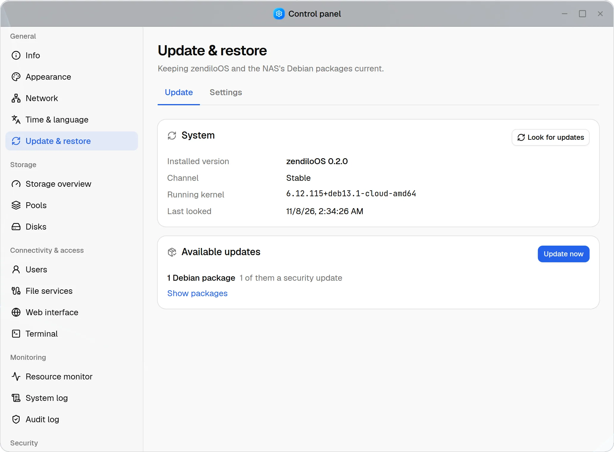
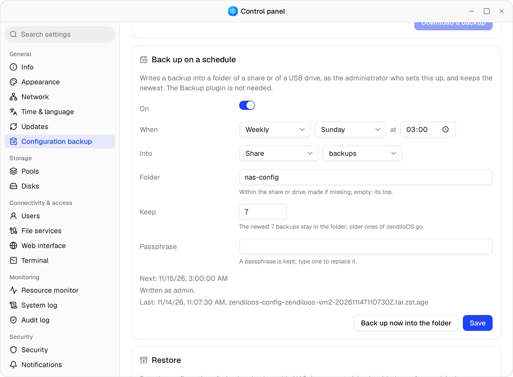
Überwachung und Benachrichtigungen
Probleme gemeldet, bevor sie wachsen.
Widgets auf dem Desktop und die Ressourcenanzeige zeigen Prozessor, Speicher, Netzwerk und Platten im Verlauf. zendiloOS sieht jede Minute nach den Pools und alle sechs Stunden nach den SMART-Werten der Platten und sagt Bescheid, wenn sich etwas ändert.
Benachrichtigungen erreichen Sie im Browser, per E-Mail über einen Mailserver Ihrer Wahl und per Webhook, für jede Art einzeln gewählt. Eine, die nicht hinausgeht, weil das Netz noch nicht steht, wird später erneut versucht.
- Kanäle
- Im Browser, per E-Mail über einen Mailserver, per Webhook; für jede Art einzeln gewählt
- Speicher
- Ein Pool beeinträchtigt oder wieder intakt, ein Resilver oder Scrub fertig, ein Volume zu 80 oder 90 % voll, die SMART-Werte einer Platte schlechter
- eMMC
- Der Verschleiß einer eMMC-Systemplatte, die kein SMART kennt, wie auf Einplatinenrechnern, etwa dem ZimaBoard
- Zustellung
- Eine Warteschlange, die Neustarts übersteht: erneut versucht, anfangs nach einer Minute, später stündlich, etwa zwölf Stunden lang
- Weniger Schreibzugriffe
- Anfragen, die nur lesen, nur noch im Debug-Protokoll, das Journal auf 512 MiB begrenzt, systemd nur neu geladen, wenn sich etwas geändert hat
- Getestet
- In virtuellen Maschinen: E-Mail und Webhook, eine Zustellung erneut versucht, sobald der Empfänger zurück ist, auch über einen Neustart hinweg.
Hardware und Architekturen
Vom Mini-PC bis zum NAS-Board.
zendiloOS läuft auf Debian 13. Auf x86-64 ist das ein NAS-Gerät, ein Mini-PC oder ein eigener Rechner, mit UEFI oder BIOS. Es braucht eine Platte für das System, eine oder mehrere für Daten (SATA oder NVMe) und eine Netzwerkverbindung: Der Installer holt Debians Pakete von dessen Spiegelserver.
zendiloOS wird jetzt auch für arm64 gebaut: Pakete und ein Installations-ISO, das über UEFI startet, für NAS-Boards und Einplatinenrechner, deren Firmware einen USB-Stick über UEFI startet und deren Hardware Debians eigener Kernel unterstützt. Boards, die den Kernel ihres Herstellers brauchen, funktionieren nicht.
Getestet wird zendiloOS von Anfang bis Ende in virtuellen Maschinen. Auf echter Hardware lief es bisher nur auf einem kleinen x86-64-Board, und auf einem echten arm64-Board noch nicht.
- x86-64
- UEFI oder BIOS; das ISO hat beide Startmenüs und den grafischen Installer
- arm64
- Nur UEFI (EDK2 oder das von U-Boot), der Text-Installer, den auch eine serielle Konsole zeigt; in der CI gebaut und seine Tests auf arm64 ausgeführt; auf einem echten Board noch nicht ausprobiert
- Virtuelle Maschinen
- Nur auf x86-64, mit Intel VT-x oder AMD-V; PCI-Geräte brauchen eine IOMMU
- Installer
- Debians eigener, mit sechs Fragen: Sprache, Standort, Tastatur, Name, Passwort für root und die Platte für das System, die nie für Sie gewählt wird
- Ein Release enthält
- Die Pakete, signierte Prüfsummen und die Installations-ISOs; Pakete und ein ISO für arm64 und eine Stückliste der Software je Paket
- NAS-Modelle
- Schachtaufbau bekannter Modelle, zuerst das UGREEN DXP4800 Plus, auf dem echten Gerät noch nicht bestätigt
- Getestet
- Die Installation vom ISO, unbeaufsichtigt in einer frischen virtuellen Maschine. Auf arm64 laufen die Tests des Backends nativ; die emulierte Installation lief noch nicht bis zum Ende.
Geben Sie Ihren Daten ein Zuhause.
ISO herunterladen, auf einem freien Rechner installieren, und Ihr eigenes NAS läuft noch heute Nachmittag.